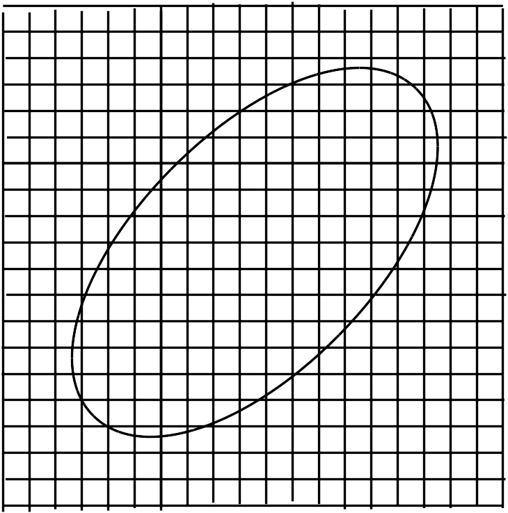

連続体力学
前回までは物体を質点の集合体（剛体）とみなすことで並進および回転運動を取り扱ってきたが、実際の質点と呼ばれるものには大きさがあり変形もする。言い換えると、物体を図のように小さい領域に分割した各領域が質点とみなせるものとなっているということでもある。直感的には細かく分割すればするほど点に近づいてより質点とみなせるものと思われるが, あまりにも小さくしてしまうと ぐらいの大きさで原子の大きさになるため古典力学の範囲を超えた議論が必要となる（量子力学を参照）。このことから、分割する領域の大きさは原子が観測されない程度にする必要があり、さらには物体全体から見ても十分小さいもの（点に近いもの）でないといけないことになる。このことを踏まえながら物体を分割して質点系とみなすと、物体内で質点は連続的に分布しているので、元々の質点系（質点同士が離れている系）とは違うものとなっている。そのため、これと区別するために連続的に分布した質点系（あるいはこうみなした物体）のことを一般に連続体と呼ぶことが多い。

では内部領域がどのような変形をするのかを見ていくことにしよう。まず、内部領域と同じように正方形の物体を考え、片方だけに力をかけてしまうと移動してしまうので、もう片方にも同じ力をかけて固定したとする（回転もおきないように同じ直線状にかけたとする）。
では、物体を連続体とみなすと運動はどのように記述されるかを見てみることにしよう。この場合も１つの質点に関する運動方程式は 番目について
となっている。ここで、 は質点の質量、 は質点の位置、 は質点に働く外力、 は 番目の質点との間に働く力としている。ただ、先ほどの述べた通り質点が連続して分布していることを踏まえるとこれらの物質量は位置 に対して連続した値で記述できるものと思われる。そこで、試しに を というように の関数として表示してみると、全体の質量 は
というように物体内の全領域 の積分で表示される。同じように、 に対しても と置くことで全体の外力 も
となる。
このうち、 としているのは に対しての総和が
というように物体内の範囲 に対する積分で記述されるとき次元として面積で割る形になっているためである。
これを見ると、密度が体積分だけあると質量になることが分かるので、１つの地点での値としてみなしても良く と書くことができる。一方で、作用する力は接触して働く力と離れていても働くものとの二種類あると考えられるため、それぞれ次のようにして作用しているものとする。
これらの力は接触面全体あるいは内部領域全体に作用するものであるが、このうち前者の方は作用・反作用の法則により１つの面を境に２つの内部領域には同じ大きさの力が逆向きに働くので、各面ごとに異なる力が働くものと思われる。対して後者の方は、内部領域ごとに違う（質量など）ものであるため、先ほどの密度と同様な考え方で面全体あるいは内部領域全体にかかる力を として
というように、面積力 と体積力 を定義してみる（このようにすると、図のように位置を指定することができる）。このようにした上で、内部領域に働く力を議論してみることにしよう。まず、面積力の方は内部領域を多面体（平面で囲まれている）と考えると以下のような力があると考えられる。剪断（せんだん）応力と垂直応力のふたつ。ただ、そうなると面の傾きが必要となり
もし、多面体が立方体であれば
であり、中には内部領域の外側に行くと傾きを持つものも出てくるため、
そこで、変形する物体も扱えるようにするために\tb{連続体力学}が誕生したのである。